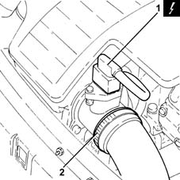
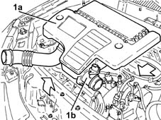
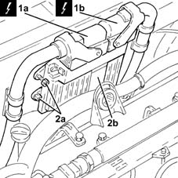

1060G80 ds electric injection control unit - r r
- Path
- Procedures > 10 ENGINE > 1060 DIESEL FUEL INJECTION > 1060G pressure pump electric control > 1060G80 ds electric injection control unit - r r
- Kind
- repair procedure (removal / refitting; the operation number is the code)
- Applies to
- engines: 1.3 JTD; all production periods
- Interactive page
- https://sloeber94.github.io/elrnDB-lYpsln/en/#/2429054
Applies to: engines: 1.3 JTD; all production periods
 Removing
Removing
 Refitting
RefittingEnsure that the ignition key is in OFF position, then disconnect the battery negative terminal (-).
 | Name | Connector |
|---|---|---|
- | Battery |
1. Disconnect the electrical connection from the air flow meter.
| Name | Connector |
|---|---|---|
1 | Air flow meter |
2. Loosen the band and disconnect the the turbocharger air inlet sleeve from the rigid pipe, air flow meter side.

Applies to: engines: 1.3 JTD; all production periods
1. Remove the air filter (1a) complete with air flow meter (1b) by releasing from the underlying pins and then from the rear fastenings.

Applies to: engines: 1.3 JTD; all production periods
1. Disconnect the electrical connections (1a) and (1b) from the diesel electronic injection system control unit.
| Name | Connector |
|---|---|---|
1a | Engine management control unit |
| Name | Connector |
|---|---|---|
1b | Engine management control unit |
2. Unscrew the nuts (2a) and remove the diesel electronic injection control unit (2b).

Applies to: engines: 1.3 JTD; all production periods
Refitting
RemovingRefit the diesel electronic injection control unit back in its housing and tighten the nuts to the specified torque.
 | Fastening | Component | Ø | Value (daNm) |
|---|---|---|---|---|
- | - | - | - | - |
Connect the electrical connections to the diesel electronic injection control unit.
Place the air flow meter in its housing on the air filter and secure it using the bolts.
Replace the air filter, complete with air flow meter, in its housing.
Connect the air intake sleeve to the turbocharger, air flow meter side, and tighten the band.
Connect the electrical connection to the air flow meter.
Connect the negative (-) battery terminal.
Topics linked from this page (4)
- A1B Battery ( BATTERY NEGATIVE )
- K41 Air flow meter ( ENGINE )
- M10A Engine management control unit ( ENGINE )
- M10B Engine management control unit ( ENGINE )
Topics that link to this page (6)
- B13 ENGINE STARTS WITH DIFFICULTY'
- B20 ENGINE STARTS, AND CUTS OUT STRAIGHT AWAY
- K101 M.I.L WARNING LIGHT STAYS ON / ENGINE STARTS
- K27 ENGINE COOLANT OVERHEATING SIGNALLED BY THE INSTRUMENT
- K29 ENGINE COOLANT OVERHEATING SIGNALLED BY INSTRUMENT - WITH VAPOURS VISIBLE
- K30 MINIMUM ENGINE OIL PRESSURE WARNING LIGHT NOT WORKING